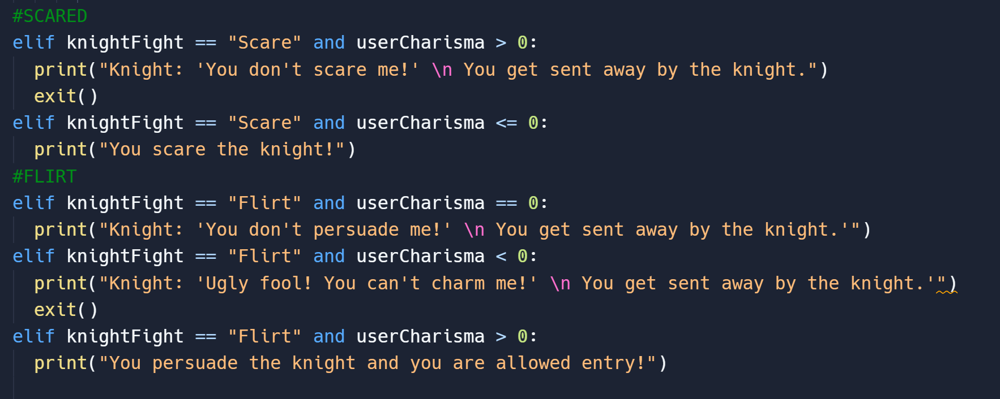

Text-Based RPG

To make a class system I searched on google how and this was what I tried using but when I tried editing it to my code it ended up not working. Since I didn't know how the code worked I wasn't sure how to fix it.

In the end I made a variable for each trait that each race/class needed. I.g. userHealth, userDefense. And depending on the race they chose I made the value for each variable change.

This is how my inventory looks. I just used a list and added the items that each character will have when they start. And whenever they gain an item I used inventory.append which added things to the inventory whenever a character picked something up.

In the game I added a few mini games along with the boss battles that happened. I.E detraining if people are lying through questions to escape a forest and finding the princesses dog inside the castle. I thought it would be interesting to add ways to skip the second battle based on the role you choose at the beginning.



Back to 9th grade projects